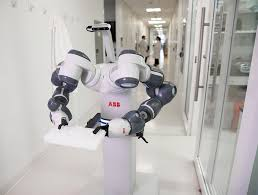

"De manière plus concrète, un employé heureux à son travail sera moins absent, moins en retard, plus investi et plus productif."
"L'environnement de travail ont émerger de nouvelles nécessités chez les employés qui demandent plus de modularité tant au niveau des horaires, que des espaces de travail."

"Cette évolution fait naître de nouvelles fonctions au sein des entreprises, avec notamment l'apparition des CHO (chief happiness officers) ou des facility managers."
"Pour assurer une meilleure cohésion interne, pour plus de confort pour leurs salariés,> et d'une manière générale, pour les fonctions simples d'accueil et d'organisation."